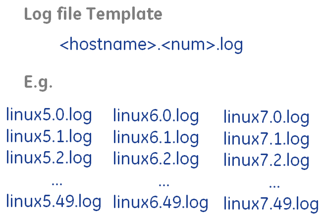

The design will include 50 test log files on each node included in the distributed system, each with 100 lines of text. This means 3 nodes with 5000 lines of text total.

Figure: Diagram of the template files to be created.
To give a range of dates within the text data, each file will only have
dates and times for a single day. As the files will be numbered from [0-49]
inclusively, each file will have timestamps from the day March 1, 2013 +
Single machine queries (still not sure if these will work):